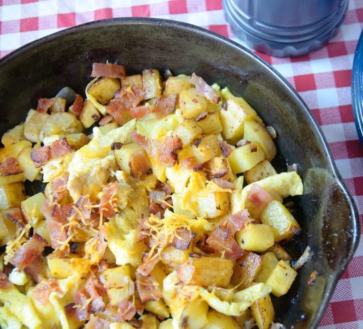

camping breakfast recipes

Start your day outdoors in the most delicious way possible with one of our favorite camping breakfast ideas. Whether you're looking for a hearty, packable recipe to make over your campfire or light, make-ahead breakfasts to prep before your trip, there's something for everyone in this collection of our best camping breakfasts.
Ingredients
- 6 slices bacon, cut crosswise into 1/4-inch pieces
- 1 tablespoon olive oil
- 2 white potatoes, cubed
- salt and ground black pepper to taste
- 1 onion, chopped
- 4 large eggs, beaten
Steps
step1
- Cook and stir bacon in a large skillet over medium heat until crispy, about 5 minutes. Transfer to a paper towel-lined plate to drain, discarding most of the grease.
step2
- Add olive oil to the same skillet over medium heat. Add potatoes, salt, and pepper; cook and stir until browned and somewhat crispy, about 10 minutes.
step3
- Mix onion into potatoes and cook until onion is translucent, about 5 minutes. Return bacon to the skillet; cook and stir until heated through, 1 to 2 minutes.
step4
- Pour beaten eggs over potato mixture; cook and stir until eggs are set, 5 to 6 minutes.
Home